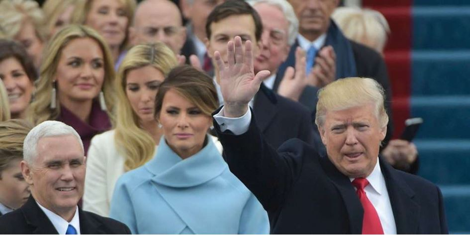

« Je continue de croire que Donald Trump ne sera pas président, car j'ai foi dans le peuple américain. »
Barack OBAMA lors d’une conférence de Presse en Californie. Extrait du Courrier International
« Personne n’a cru en la victoire de Donald Trump… à part vous et moi »
Vladimir Poutine lors d’une conférence de Presse à Moscou, le 23 décembre 2016
Avec effarement les médias et les chancelleries diplomatiques ont dû accepter le verdict des urnes et constater que Donald Trump est bien devenu le 45ème Président des Etats-Unis. Les observateurs politiques du monde entier persuadés que le nouveau président élu prendrait du temps pour s’imprégner des dossiers ont été une fois de plus confondus en découvrant que bien que ne disposant pour l’instant que de pouvoirs limités il légifère par décret, tient ses engagements de campagne et prend des décisions tangibles promise à son électorat. Il est rare de voir un homme politique accomplir dans les faits et aussi rapidement ses promesses de campagne !
Durant la campagne présidentielle les rapports russo-américaines ont été évoqués et à la une des médias suite aux accusations de piratage supposé ou réel des services de renseignement russe d’une part mais surtout par l’admiration que Donald Trump porte à son homologue Russe Vladimir Poutine. A la grande surprise des européens, les appréciations flatteuses ou élogieuses de l’un pour l’autre soulèvent la question de la politique que l’administration Trump voudra conduire durant les 4 prochaines années non seulement avec la Russie mais aussi avec ses partenaires historiques et le reste du monde.
Cet article se propose d’appréhender, d’une part les projets du Président Trump en matière de politique étrangère américaine mais aussi de découvrir les acteurs et les mécanismes décisionnels à Washington. Car contrairement aux attitudes et bien que la décision finale converge au final vers le président des Etats-Unis, le processus est complexe et le fruit de mécanismes engageant une multitude d’acteurs ayant chacun un rôle à jouer. Bien que le pouvoir exécutif américain semble jouir d’une domination sur tout le processus de préparation de la politique étrangère américaine il serait incongru d’omettre l’importance du pouvoir législatif dans l’engagement des politiques nationales.
Le 20 janvier 2017, au Capitole à Washington D.C., le Président Trump terminera son premier discours en tant que président des États-Unis par les mots suivants :
« Together, we will make America strong again. We will make America wealthy again. We will make America proud again. We will make America safe again. And yes, together, we will make America great again. Thank you. God bless you. And God bless America »1
A travers cette proclamation, qui reprend une partie de son slogan de campagne, le Président Trump se place en scission nette avec son prédécesseur Obama. Durant sa campagne il s’est fait le chantre du changement en matière de politique étrangère, exhortant une stratégie inédite contre L’Etat islamique et se prononçant de manière péremptoire sur des sujets plus globaux tels que le réchauffement climatique ou la régulation de l’économie mondiale tout en employant sa rhétorique populiste qui a exacerbé les tensions dans le monde occidental, envers les Chinois et chez les minorités vivants aux Etats-Unis, seul Poutine a eu grâce à ses yeux !
Il est encore délicat d’évaluer les relations qu’auront les Etats-Unis avec leurs partenaires européens alors que des élections auront lieu dans les prochains mois en France comme en Allemagne. Il en est de même pour le futur des relations russo-américaines et avec l’Empire du milieu. Mais, bien qu’aucune conclusion hâtive ne puisse être encore être tirée, le Président Trump a déjà opéré une rupture manifeste dans la manière de vouloir gérer les dossiers internationaux et force est de constater que l’action unilatérale symbolise déjà les débuts de sa présidence.
LES PRIORITÉS DE TRUMP
Pour Trump, les États-Unis cesseraient d’intervenir de manière intempestive pour se recentrer sur leurs intérêts nationaux, tout en déployant leur marge de manœuvre sur la scène internationale. Néanmoins, la lutte contre l’Etat islamique et contre le terrorisme en général sera une de ses priorités de la politique étrangère ainsi que le nucléaire iranien de par ses enjeux pour la sécurité internationale. Il s’est également penché sur des sujets qui soulèvent de vives protestations comme son revirement dans la politique climatique. La reprise des tensions avec la Chine marque autant une variation de la politique américaine en Asie et risque d’aboutir à une diplomatie plus inflexible.
DONALD TRUMP PEUT-IL AGIR SEUL ?
Ce sont les pouvoirs souverains que lui consacre la Constitution des Etats-Unis d’Amérique qui font qu’il maîtrise l’élaboration de la politique étrangère américaine. Il dispose du pouvoir de conclure et signer des traités, comme les accords en forme simplifiée, et reconnait les Etats sur le plan juridique. Le bouleversement des relations internationales depuis les débuts de la guerre froide avait conduit à un élargissement des pouvoirs de la maison blanche dû en partie par la capacité de certains présidents à exercer leur autorité. Néanmoins il serait approximatif de croire que le président seul prenne des décisions qui engageraient la politique de la Nation de façon irréversible et à l’encontre même de l’intérêt du peuple américain. Aussi, d’autres acteurs institutionnels sont engagés dans l’élaboration de la politique étrangère américaine.
L’ADMINISTRATION AMÉRICAINE
Pour assister le Président des Etats-Unis dans l’élaboration de sa politique extérieure il a sous sa tutelle de nombreuses institutions gouvernementales qui œuvrent et contribuent à le conseiller au plus près. L’énumération des organes gouvernementaux et consultatifs les plus importants devraient permettre d’éclairer le lecteur sur les instances ayant un rôle consultatif ou décisionnel auprès du Président. Au sommet de la hiérarchie décisionnelle se trouve le bureau exécutif de la présidence qui contrôle l’ensemble des activités du gouvernement, dans les secteurs jugés vitaux par le Président. Nous trouvons en son sein le Conseil de sécurité national qui est placé sous l’autorité directe du Président et qui est au cœur de l’élaboration de la politique étrangère américaine. Doté de moyens très importants le conseil agit aujourd’hui comme l’instance chargée de planifier et mettre en œuvre la politique étrangère du Président Trump.
Le Département d’Etat est, aux États-Unis, le département exécutif fédéral chargé des relations internationales. Il est donc l'équivalent du ministère des Affaires étrangères des autres États. C’est lui qui mène la diplomatie officielle du pays. Chargé de la direction politique et de l’orientation des décisions touchant aussi bien aux recommandations de stratégie globale, la coordination des affaires courantes, représente les Etats-Unis aux Nations Unies etc.
Le ministère est dirigé par le secrétaire d'État des États-Unis, Rex Tillerson.
Autre grand acteur agissant au niveau diplomatique que militaire et le département de la Défense bien souvent défini par son lieu d’exercice : le Pentagone. Assisté par plusieurs secrétaires d’Etat et les hauts commandements militaires le président est ainsi conseillé sur les orientations de la politique de défense d’une part ainsi que sur les menaces potentielles et l’état des forces militaires. Le département de la sécurité intérieure quant à lui surveille et protège les frontières américaines. Il aura une responsabilité accrue dans les prochains mois non seulement dans la politique globale intérieure du pays mais plus que jamais dans celle liée à la politique étrangère tout particulièrement avec la question du mur avec le Mexique.
Bien connu des adeptes de film d’espionnage mais néanmoins un élément plus qu’indispensable dans la politique étrangère d’une nation comme les Etats-Unis, les services de renseignement sont essentiels pour que le président puisse mener une politique étrangère avec évaluation des menaces et des choix stratégiques. La communauté du renseignement des États-Unis regroupe 17 services de renseignement appartenant à plusieurs ministères. Parmi lesquels l’incontournable agence centrale du renseignement, la CIA, chargée de collecter et évaluer les informations politiques, économiques et scientifiques nécessaires à la prise de décision.
D’autres se concentrent sur des aspects plus précis du renseignement et dépendent du Pentagone comme la Defense Intelligence Agency sur les capacités militaires et de défense de l’ennemi, la National Security qui surveille les communications, etc.
Enfin les ministères traditionnels participent à l’élaboration de la politique extérieure, le Département du Trésor pour les questions économiques, le département de la Justice dans le domaine des stupéfiants, le département du Commerce pour la stratégie commerciale internationale.
UN PARTENAIRE DIFFICILE ET INCONTOURNABLE
LE POIDS DU CONGRÈS DANS LA POLITIQUE EXTÉRIEURE
Le congrès (sénat et chambre des représentants) représente le peuple américain et conduit les parlementaires à exprimer l’opinion de leur électorat. Cette représentativité des opinions assure l’autorité de ses résolutions. Aussi, Le mécanisme qui régit la séparation des pouvoirs aux Etats-Unis soumet la ratification des traités au vote du Sénat et en gérant par son contrôle du budget l’attribution des fonds nécessaires à des opérations extérieures elle détermine si les orientations présidentielles en matière de politique étrangère doivent être suivies. Le congrès peut bloquer les initiatives présidentielles comme influencer ces décisions. Ainsi le Power Act limite les pouvoirs présidentiels dans les conflits armés. La puissance du congrès s’explique également par l’expertise des commissions du Sénat ou de la Chambre des représentants qui sont celles des forces armées, des affaires internationales et du budget. Aussi les débats en commission où sont débattues toutes les orientations possibles, en se détachant des querelles partisanes du Congrès ont permis de nombreuses initiatives prises en commun et qui ont parfois permis de bloquer des propositions présidentielles. Mais ces blocages ont également permis de développer un partenariat constructif entre l’exécutif et le législatif, le dialogue étant nécessaire pour la définition d’une politique étrangère cohérente.
L’OPINION PUBLIQUE ET LES MÉDIAS
Depuis le début de campagne, les rapports entre le Président Trump et les médias sont relativement tumultueux et tendus. Or le rôle des médias aux Etats-Unis, dans la couverture des affaires internationales et la mobilisation de l’opinion publique est essentiel. Or force est de constater qu’elle peut être rigoureuse mais entrainer une confusion facilitant la manipulation légitimée par le soutien d’une certaine opinion publique anti-Trump. C’est le grande inconnue pour le moment car Donald Trump qui depuis la campagne et encore plus à l’issue de l’élection voit une mobilisation active s’élever contre lui par une partie de la population américaine, semble vouloir engager un bras de fer avec elle dont le résultat devrait se résumer à la durée et réelle influence de cette dynamique dans les prochains mois. C’est une mauvaise analyse politique de se focaliser que sur la partie de la société civile américaine qui conteste la présidence de Trump, car le président élu a pu bâtir son succès électoral aussi grâce au soutien d’organisations variées structurées et très fortes tels des groupes de pressions, des lobbys, associations etc. Grâce à leur influence elles sont en mesure par divers moyens de faire valoir leurs intérêts auprès des membres du congrès et donc tout naturellement influencer le législatif comme l’exécutif.
CONCLUSION
Avec le faible recul disponible à ce jour en la matière, il est encore trop tôt pour faire une analyse précise de ce que décidera ou non Donald Trump en matière de politique étrangère mais il est indiscutable que son investiture représente un tournant dans la conduite des affaires internationales par les Etats-Unis. Au-delà de ses discours et de ses postures Trump a déjà pris des décisions symboliques qui ont des répercussions quant à la perception des Etat-Unis sur la scène internationale. Pour l’instant Trump n’est pas vraiment le partisan d’un apaisant de tensions et d’une ouverture au dialogue fondée sur le partage d’intérêts communs. Trump semble vouloir se dégager des priorités politiques étrangères américaines de son prédécesseur et réorienter la diplomatie de Washington vers des thèmes nouveaux. Pour l’instant il est également trop tôt pour qualifier la politique étrangère conduite par d’administration Trump. Bien que les tweets du nouveau président sont un bon moyen de communication et de propagande ses collaborateurs lui rappelleront rapidement l’ampleur et la complexité des dossiers à traiter et qui peuvent décider du sort du monde.
A.W.
1« Ensemble, nous allons rendre sa force à l'Amérique. Nous allons rendre sa prospérité à l'Amérique. Nous allons rendre sa fierté à l'Amérique. Nous allons rendre sa sécurité à l'Amérique. Et oui, ensemble, nous allons rendre sa grandeur à l'Amérique. Merci. Que Dieu vous bénisse. Et que Dieu bénisse l'Amérique »
Partager cette page